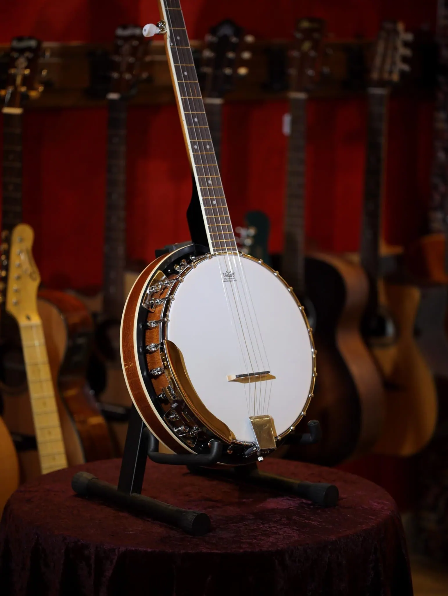

Su origen es africano, de un instrumento de 3 cuerdas con caja de madera. Fue desarrollado en el siglo XIX en
Estados Unidos y en Irlanda, donde los músicos explotaron sobre todo sus posibilidades rítmicas. Hacia 1890
entra a formar parte de la música dixieland, y pronto se convierte en el instrumento musical por excelencia de
la música tradicional estadounidense.
En sus orígenes, es abierto por la parte trasera (banjo openback), añadiéndose en el siglo XX un resonador de
madera a modo de cierre. Se conforma así el banjo de bluegrass, con mayor resonancia y volumen que su hermano
mayor. Hasta el día de hoy, ambos tipos de banjo siguen conviviendo y son empleados dependiendo del estilo
musical.
Los banjos (openback y bluegrass) se desarrollan asimismo durante el siglo XX en infinidad de instrumentos,
variando la longitud del mástil y el número de cuerdas, y combinándose con otros instrumentos tradicionales.2
Surgen así los banjos plectrum (de 4 cuerdas), los tenores y tenores irlandeses (con mástil corto y 4 cuerdas),
los banjoleles (banjo-ukeleles), las guitarras-banjos (banjo con mástil de guitarra), los mando-banjos (fusión
de banjo con la mandolina) y otros. La familia del banjo es por tanto, muy numerosa.
Este instrumento da un sonido muy característico a las bandas de country y jazz en sus distintas modalidades, y
la velocidad de pulsación de sus cuerdas varía de unos estilos a otros, por ejemplo, en el bluegrass el ritmo es
tan rápido que causa admiración.
Inclusive el charlestón y el foxtrot usan este instrumento en algunas variantes especiales.